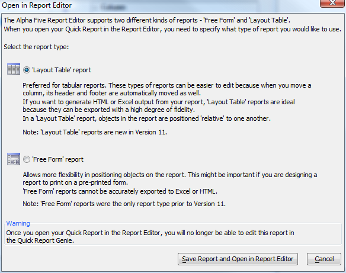

Converting a Quick Report to a Layout Table Report
Once you have gone as far as possible with a Quick Report, you'll want to convert it to a Free Form or Layout Table Report. The Open in Report Editor button on the main toolbar does this when the Quick Report Genie is open.If you want to preserve the Quick Report for future use in the Genie, first press the Save As button on the main toolbar and either accept the generated name or choose a new name.
When you press the Open in Report Editor button you will see this dialog:

Pick 'Layout Table' report and press the Save Report and Open in Report Editor button to convert the Quick Report to a Layout Table Report. When the report editor opens you will see the Layout Table editing features discussed in Editing a Layout Table Report V11.
If you instead choose 'Free Form' report you will open an old-style report. As discussed in the Open in Report Editor dialog and Layout Table Reports V11, each style of report has some advantages, but if you want a report for use in a web site or email you will most likely want a 'Layout Table' report.